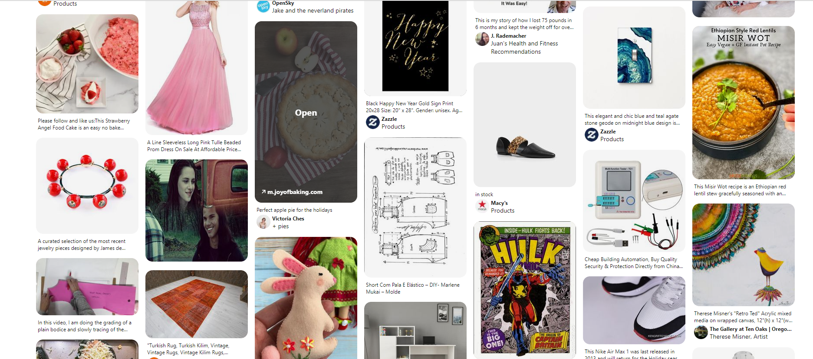

Usando a rede social

O Feed do Pinterest
Apos concluir o seu cadastro, a rede social vai mostra um feed contendo ideias relevantes aos assustos que te interessam e você pode buscar na barra de pesquisas por ideias especificas.

Apos concluir o seu cadastro, a rede social vai mostra um feed contendo ideias relevantes aos assustos que te interessam e você pode buscar na barra de pesquisas por ideias especificas.